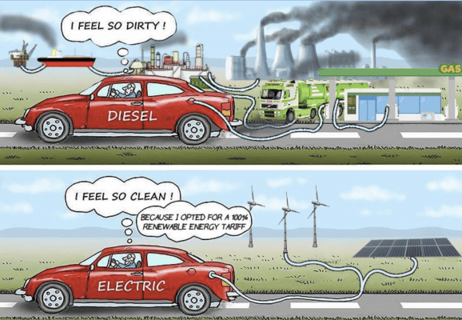

El primer hecho irrefutable es que el coche eléctrico no emite gases en su funcionamiento. Por desplazarnos con él no emitimos al aire ningún tipo de gas contaminante ni de efecto invernadero, mientras que los coches térmicos queman combustible y generan emisiones contaminantes.
El segundo hecho siempre depende de las circunstancias. Nos referimos aquí a la huella de carbono, ya que el coche eléctrico utiliza electricidad para propulsarse y esta puede generarse de multitud de maneras.
Considerando que un usuario conectará su vehículo a la red eléctrica, estaría emitiendo indirectamente 246,4Kg de CO2 para recorrer la distancia típica anual en España (10.548,5Km/Año/Persona), debido a las emisiones de las plantas que producen la electricidad en España.
Si este mismo usuario no utiliza la red eléctrica española y carga su vehículo con paneles solares y baterías instalados en casa, estaría contribuyendo con 0,0Kg de CO2.
El tercer hecho y el más importante es que los coches térmicos (especialmente Diesel) en su proceso de combustión generan más de 4 tipos de gases distintos, fijando nuestra atención en las micropartículas en suspensión, o PM. Las de 2.5 micras de tamaño, también llamadas PM 2.5 son las que nos causan los problemas más graves de salud. Aunque el coche eléctrico contribuya con 246,4Kg de CO2 no nos mata ni aunque los respiremos.
El coche electrico nos permite utilizar energia renovable,aunque muchos digan que contamina igualmente solo porque la electricidad puede venir de centrales electricas que queman combustible para obtener la energia.

Ventajas según la ciudad
Madrid
Bonificación del 75% en el pago del impuesto de Tracción Mecánica o impuesto de circulación.
Exenciones en el pago del estacionamiento regulado. Pueden aparcar de forma gratuita en zonas de estacionamiento regulado del SER sin limitación horaria. Para poder beneficiarse de este servicio será obligatorio que soliciten la autorización ‘Cero Emisiones’.
Libre acceso a Áreas de Prioridad Residencial (APR)
Ventajas durante los episodios de alta contaminación. Estos protocolos de contaminación no afectan a los vehículos eléctricos, que podrán circular por las calles y carreteras de Madrid cuando se impongan medidas restrictivas por alta contaminación. (Ejemplo: Matriculas Par o Impar)
Usar el carril Bus-VAO cuando no viajen con acompañantes